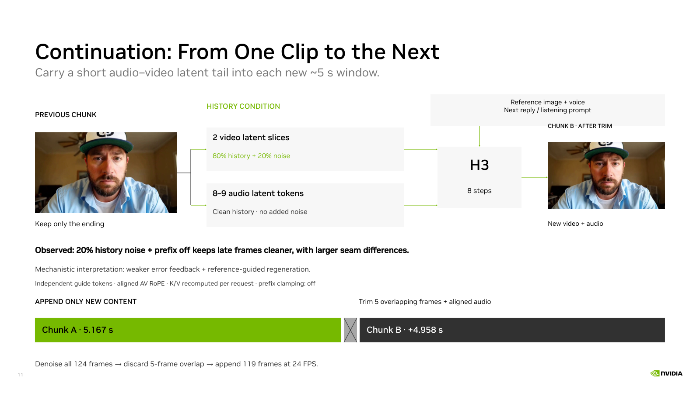

完整窗口与重叠区
每轮实际生成完整的 124 帧。第一轮覆盖全局帧 0–123；第二轮覆盖 119–242，裁掉第二轮的 119–123 后，追加 124–242，共 119 帧。保留的两片视频 latent 覆盖上一轮最后 5 帧；它们作为独立历史条件加入新请求。prefix off 时，本轮重叠区也重新生成。K/V recomputed 表示没有跨请求复用注意力 KV，不能理解为只计算重叠的 5 帧。
Online continuation slide · Interaction pipeline and full settings · Recorded demo

The images show the last frame of Chunk A and the first retained frame of Chunk B from two consecutive demo requests. The second image is already overlap-trimmed. Frame provenance
The first window contributes 5.167 seconds. Each continuation adds 4.958 seconds at 24 FPS. Window starts advance by 119 frames; cumulative audio–video positions continue across requests.
Recorded demo settings: the video guide mixes 80% history with 20% seeded noise; audio history stays clean; target prefix clamping is off. This guides continuity without fixing the generated prefix to an exact copy. It is not a lossless transformation or a guarantee against long-term drift.
The carried state consists of AV latents, not attention K/V tensors. The next request rebuilds conditioning and recomputes attention K/V. Two video latent time slices do not mean two decoded frames or two attention tokens. The 20% coefficient means 0.8 × history + 0.2 × seeded noise; audio history remains clean. The diagram is schematic, not to scale.
This page explains the existing implementation; it reports no new benchmark. The ASR / LLM / H3 interaction pipeline is on slide 10 and the recorded conversation is on slide 12.
Configuration and source provenance
对应第 11 页。以下将代码事实、既有实验观察和机制解释分别说明；本次只更新讲解，没有重新运行生成实验。
第一轮：帧 0 ─────────── 118 │ 119–123 第二轮： │ 119–123 │ 124 ───────── 242 拼接：保留第一轮 0–123；第二轮裁前 5 帧，追加 124–242。
每轮实际生成完整的 124 帧。第一轮覆盖全局帧 0–123；第二轮覆盖 119–242，裁掉第二轮的 119–123 后，追加 124–242，共 119 帧。保留的两片视频 latent 覆盖上一轮最后 5 帧；它们作为独立历史条件加入新请求。prefix off 时，本轮重叠区也重新生成。K/V recomputed 表示没有跨请求复用注意力 KV，不能理解为只计算重叠的 5 帧。
latent 时间跨度按 1、4、4、4、4 帧循环。上一轮 latent 35 从全局帧 119 开始，latent 36 从 120 开始；分别与下一轮 latent 0、1 对齐。时间 RoPE 坐标为 C + 全局帧起点 × 40/24，空间网格保持一致。历史条件与目标拥有相同的时空坐标，但属于不同 tokens：历史条件保持固定，目标参与去噪。已有 CPU 检查确认 RoPE 所用 FP32 坐标完全一致；这项检查验证位置构造，没有运行模型生成。
FL2VA 可以把上一段末帧作为下一段首帧条件，仅提供首帧即可。它保留静态外观与姿态，但单张图片本身不能唯一确定运动方向、速度或音频状态。当前 Ref2VA 路线同时携带原始人物/声音参考、短视频历史和对齐的音频历史，提供更多接续线索。现有记录没有 FL2VA 对 Ref2VA 的配对实验，因此不能宣称 Ref2VA 已被证明优于 FL2VA。当前 demo 的 rolling 路径使用 Ref2VA；上游 FL2VA latent-mask 续接是另一条已存在的路径。
prefix on 将历史视频 latent 复制到目标开头，标记为 clean，并在每一步 Euler 更新后恢复为原值。clean 仅表示没有扩散噪声，并不表示画面没有瑕疵；已有错误纹理也被固定。prefix off 保留历史条件，同时允许全部目标重新生成，因此有机会修正新画面中的细节。历史条件本身没有被重新去噪。
实际公式为 h_noisy = 0.8 × h + 0.2 × ε，其中 ε 是按 seed 生成的高斯噪声。20% 是线性混合系数，不是噪声方差、替换帧比例或给输出叠加噪点。代码还设置历史条件的 RF timestep = max(t_video, 0.8)；这个 timestep 表示噪声等级，和 RoPE 的视频时间不同。原始参考图仍使用 0.001 噪声系数，音频历史保持干净。
把历史写成 h = 理想内容 + 生成误差 e，则加噪后误差仍以 0.8e 存在。改善来自模型利用带噪历史、原始参考和学到的自然画面规律生成更合理的目标内容。合理解释是：条件不确定性降低了对错误历史细节的依赖，prefix off 解除目标硬约束，从而减弱跨窗口的错误反馈。Cascaded Diffusion Models 与 Diffusion Forcing 的研究支持条件加噪缓解误差累积这一方向；当前 H3 的具体作用大小尚未逐项隔离测量，不能声称它采用了这些论文的同一训练方法。
同为 20% 历史噪声的两条链使用相同提示词、seed、模型配置及 32 窗口计划，首窗口 MP4 字节一致。记录中的后期抽样画面显示：prefix off 的脸、衣服、背景更干净；接缝像素 MAE 中位数从 prefix on 的 0.01141 增至 off 的 0.02029。MAE 对运动敏感，并非完整的感知质量评分。背景与姿态漂移仍然存在。现有对照没有固定 prefix off 后单独扫描噪声比例，因此不能归因于噪声一项或声称 20% 最优。
重叠区目标仍参与整段视频的联合去噪，影响后续 119 帧。输出只裁掉重复的时间区间；历史已播放的旧帧不会被回溯修复。这里的恢复指后续生成摆脱或减轻劣化累积。每轮输出的新尾部又成为下一轮历史，长期质量和接缝连续性需要同时观察。
| 20% 历史噪声 | 后期抽样画面 | 接缝 MAE 中位数 |
|---|---|---|
| prefix on | 累积劣化较明显 | 0.01141 |
| prefix off | 更干净，仍有漂移 | 0.02029 |
既有实验摘要 · 已有 CPU 位置检查 · ComfyUI 的时间遮罩续接
Cascaded Diffusion Models — conditioning augmentation · Diffusion Forcing — stabilization with noisy history